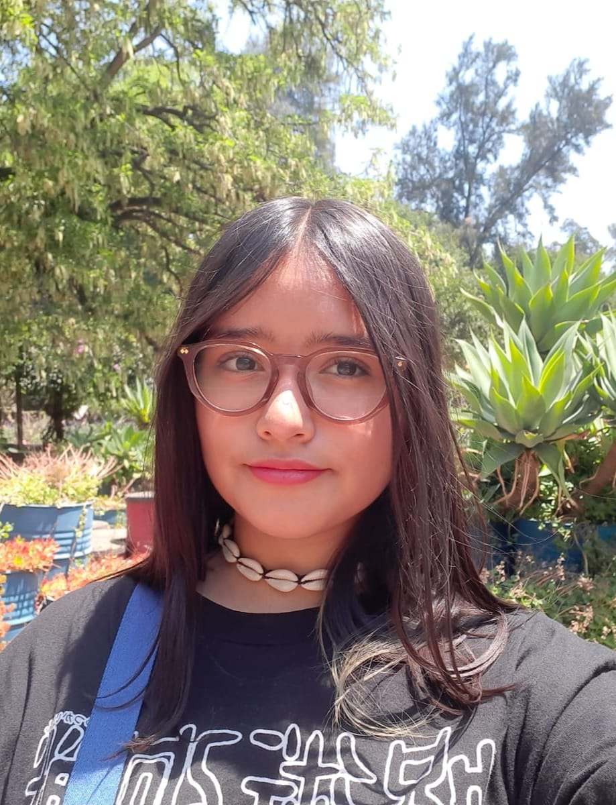

Me llamo Nataly Rosaly Arteaga Romero, tengo 18 años de edad y mi cumpleaños es el 21 de febrero. Acabo de terminar el bachillerato y entraré; a la universidad en agosto, sin embargo, sigo estudiando en cursos que metí; para entrar preparada a la universidad, estos cursos son de cálculo, inglés y programación. Soy una persona a la que le gusta explorar y aprender nuevas cosas, más las que están relacionadas con ingeniería, la mayoría del tiempo suelo estar haciendo cosas relacionadas con la escuela o bien con el estudio y en mis tiempos libres hago viajes cortos o simplemente me quedo en casa viendo series o leyendo. Me encanta el café; y escuchar música, no soy mucho de deportes pero también me gustan.
Portafolio de ProyectosNataly Romero
Trabajos
Proyecto 1
A final del primer semestre hice un formulario ocupando varios de los temas vistos, fue como una pequeña evaluación.
Proyecto 2
Como proyecto final realicé una página web con todos los temas vistos, el tema fue libre, así que la hice acerca del tema de las plantas para poder poner varias secciones.
Mi contacto
